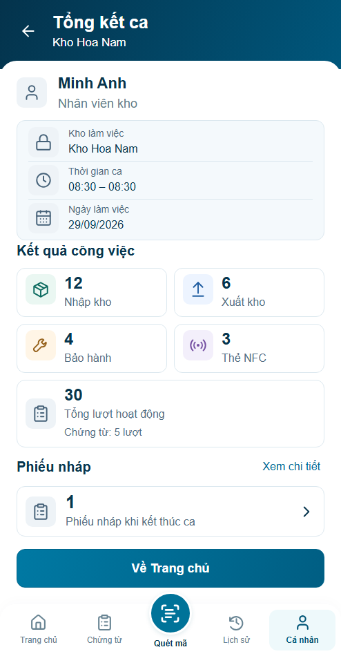
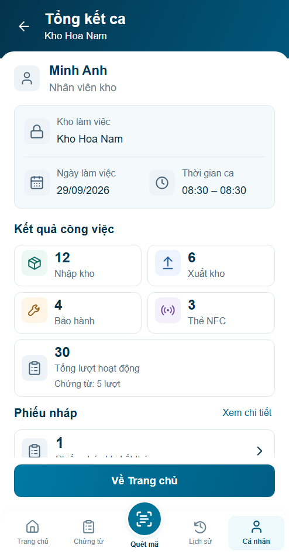
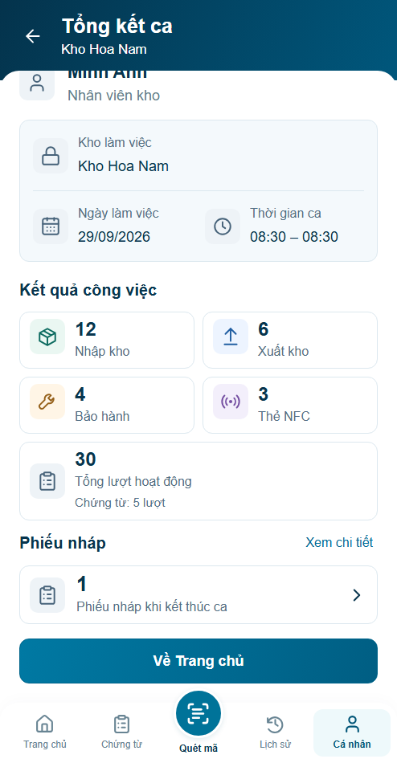
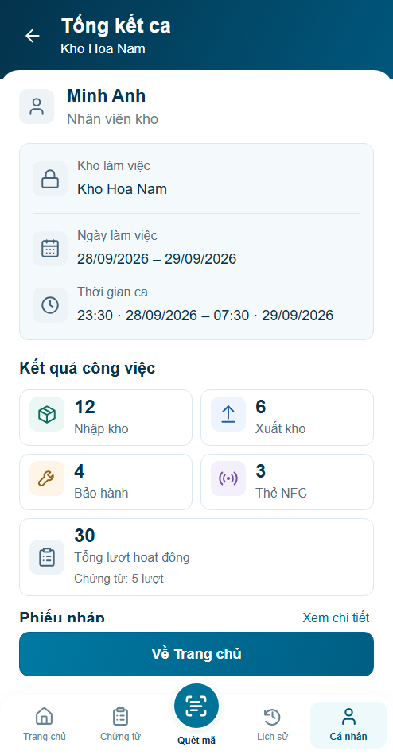

Trước · r03

S03: hành động trong cùng dock, tiếp tục tại thẻ; S04: kho riêng, ngày/giờ hai cột. Hình thức chờ review; backend chưa tích hợp.
Báo cáo r04 · Nguồn/quyết định · Đủ bốn panel





Before/after cùng494×950 CSSpx/DPR1/Arial/clock08:30. Giữ kích thước chữ, cho phép cuộn nội dung dài; không ép tất cả vào một ảnh.